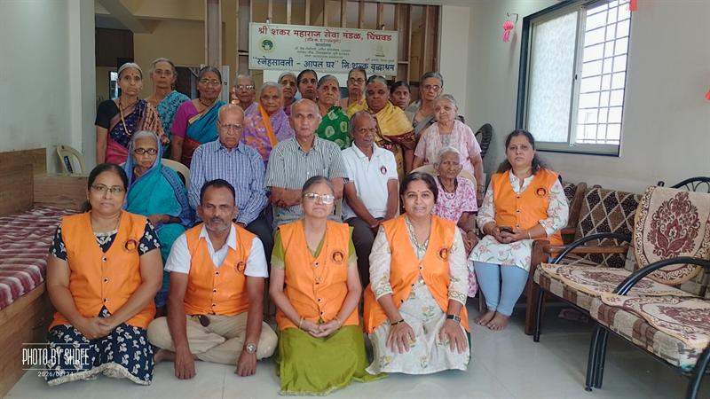

Snehsavali – Aapla Ghar
स्नेहसावली – आपलं घरA completely free old-age home at Charholi, near Alandi. Residents receive accommodation, nutritious food, clothing and full medical care, including surgeries such as bypass, cataract and hip replacement.
Inside Snehsavali